Programa Profesional · Instituto Tramontana · 1ª Edición
15 septiembre 2023 — 19 abril 2024
«¿Cómo crear empresas que importen?»
ComenzarParte I
Los fundamentos antropológicos, las fuerzas que mueven el mundo y la relación eterna entre persona y producto
Antes de hablar de marcas, productos o estrategias, conviene detenerse en una pregunta que raramente se formula en las escuelas de negocios: ¿qué somos? La respuesta a esa pregunta determina todo lo que viene después. Si no entendemos cómo funciona el ser humano —qué le mueve, qué le une, qué le da miedo, qué le da esperanza—, difícilmente podremos crear algo que le importe.
Tres pensadores nos dan coordenadas esenciales. Aristóteles definió al ser humano como un animal social, racional y político. No podemos vivir aislados: necesitamos comunidad, lenguaje compartido, organización. Kant fue un paso más allá: somos un animal que necesita un líder. No por debilidad, sino porque la complejidad social exige articulación, dirección, alguien que señale un horizonte. Y Ernst Cassirer completó el cuadro al describirnos como el animal simbólico: vivimos en un universo de símbolos y significados —banderas, escudos, emojis, logos— que configuran nuestra realidad tanto o más que los hechos materiales.
Necesitamos creer para sentirnos seguros. El caso del Atlético de Madrid y su cambio de escudo ilustra lo que ocurre cuando no se integra a la comunidad en las decisiones sobre sus símbolos: la reacción fue visceral, porque tocar un símbolo es tocar la identidad. Nuestra profesión, demasiadas veces, vive aislada de la gente que consume lo que hacemos.
Aristóteles clasificó tres tipos de amistad que resultan extraordinariamente útiles para entender la relación entre empresas y personas:
Hay tres grandes categorías de fuerzas que configuran la realidad humana. Las fuerzas creativas —pensamiento, lenguaje, escritura, matemáticas, diseño— son las herramientas con las que construimos sentido. Las fuerzas científicas —física, química, biología— son las leyes que enmarcan lo posible. Y las fuerzas sociales —capitalismo, poder, política, religión, amor, miedo— son las corrientes que dirigen el comportamiento colectivo.
De todas ellas, hay una que merece atención especial: el lenguaje.
«El lenguaje construye la realidad. Los límites del lenguaje son los límites del pensamiento.»
El lenguaje puede que sea la fuerza más poderosa creada por la humanidad. No solo describe el mundo: lo crea. Cada palabra que elegimos, cada frase que articulamos, configura lo que es posible pensar y, por tanto, lo que es posible hacer.
George Lakoff, lingüista cognitivo de Berkeley, demostró que nuestras decisiones no nacen de los hechos sino de los marcos mentales a través de los cuales interpretamos esos hechos. Su libro No pienses en un elefante es una lección magistral sobre cómo el lenguaje metafórico, la exacerbación de instintos y la apelación a la emoción desde la moralidad determinan el pensamiento.
Los marcos funcionan en política —«sistema de bienestar» frente a «paguita», «élite» frente a «casta»— y funcionan exactamente igual en producto y marca: «el Airbnb de los campings», «el Spotify de los libros». Quien controla el marco, controla la conversación.
Michel Foucault nos enseñó que el poder clasifica, controla y establece el concepto de normalidad. «El poder vigila y castiga a todo aquello que se sale de la norma.» Lo normal no es lo mismo que lo correcto. Entender esta distinción es fundamental para cualquier persona que quiera crear una empresa que desafíe el statu quo.
Desde los años 50, la normalidad dejó de ser dictada exclusivamente por el poder institucional. La televisión, la radio, el rock and roll y después internet democratizaron —para bien y para mal— la capacidad de crear marcos de normalidad.
David Foster Wallace, en su célebre discurso en la ceremonia de graduación del Kenyon College en 2005, contó la historia de dos peces jóvenes que se cruzan con un pez viejo. «Buenos días, chicos. ¿Cómo está el agua?», les pregunta. Los dos peces jóvenes siguen nadando un rato hasta que uno mira al otro y dice: «¿Qué demonios es el agua?»
Las narrativas son ese agua. Nos rodean, nos condicionan toda la vida e influyen en lo que somos y lo que hacemos. Son invisibles precisamente porque son omnipresentes. Crean la realidad, definen lo correcto y lo incorrecto, establecen la normalidad. Nuestras creencias y convenciones crean la normalidad en la que vivimos.
Iván Redondo, estratega político, identificó tres emociones que más mueven a las masas: miedo, rechazo y esperanza. Estamos en una época de cambio donde el dato y los valores económicos han perdido importancia relativa frente a la emoción. Antes me emociono y luego pienso. Los lemas históricos que han calado en la sociedad —«Es la economía, estúpido» de Clinton, «España va bien» de Aznar— son prueba de que un buen marco mental puede redefinir una realidad entera.
Sartori advirtió que la esclavitud a lo visual, la sobrecarga de estímulos visuales y la constante exposición a imágenes hace que nuestro pensamiento abstracto se atrofie. Los mensajes caen en burdas simplificaciones, perdemos la capacidad de entender matices y eso es devastador para la democracia y para la calidad de las decisiones. El umbral de atención baja, el literalismo avanza, la incapacidad de abstracción se instala.
¿Qué une a la gente? Ejércitos, oro, banderas, historias. Nada es más poderoso que una buena historia. Nos hacemos adictos a las historias porque nos dejamos llevar por las emociones. Lo que no se ve no existe.
A lo largo de los siglos, las narrativas dominantes han ido configurando el mundo que habitamos:
El amor romántico, que define nuestra sociedad occidental, fue algo que aprendimos: una narrativa que nace en el siglo XIV-XV y que determina nuestra manera de ver el mundo, cómo actuamos y cómo nos relacionamos.
¿Para qué sirven los productos más allá de su función? Esta pregunta, aparentemente sencilla, abre tres dimensiones enormes:
En 1968, la fotografía Earthrise —la primera imagen de la Tierra desde el espacio— lo cambió todo. Por primera vez, la humanidad se vio a sí misma como un todo conectado. Esa imagen fue el punto de partida del movimiento ecologista. Un producto —una cámara, un cohete, una película fotográfica— nos cambió como especie.
¿Qué objetos nos han cambiado la vida? Fuego, anticonceptivos, rueda, reloj, imprenta, papiro, electricidad, jeringuilla, bombilla, ordenador, televisión. Una persona puede llegar a cambiar el mundo. Philo Farnsworth, adolescente, concibió la televisión. Los ordenadores, como intuían en Halt and Catch Fire: «Computers aren't the thing. They're the thing that gets us to the thing.»
La narrativa buena es antes del producto. La narrativa dirige el hacer. Tu producto también es el mensaje. Lo que hacemos también es narrativa, marca, cultura.
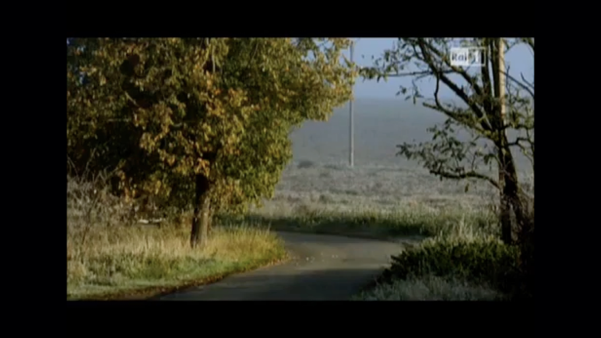
Adriano Olivetti creía que era posible crear un nuevo tipo de empresa que fuera más allá del capitalismo y el socialismo. La «Cultura Olivettiana» fue revolucionaria: salarios iguales hombre-mujer en 1929, 40% de mujeres en plantilla, guarderías en oficinas, permisos de maternidad de 9 meses, clases de caligrafía, filosofía, literatura e historia del arte. Espacios abiertos integrados en la naturaleza. De 300 trabajadores en 1929 a 80.000. Ivrea, su sede, es Patrimonio UNESCO.
«Quiero que Olivetti no sea solo una fábrica, sino un modelo, un estilo de vida. ¡Quiero que produzca libertad y belleza porque serán ellos, libertad y belleza, que nos digan cómo ser felices!»
Fritz Eichler no diseñaba productos: diseñaba procesos. Su principio fundamental: «El diseño no debe maquillar el producto a posteriori. Debe estar involucrado desde el principio.» Si Fritz no las hubiera expresado con palabras —haciéndolas accesibles y accionables para todos—, las ideas de Braun seguirían siendo solo ideas. Fue la cooperación de dos personas muy diferentes que se complementaron perfectamente: Erwin Braun inició la reorientación, Fritz Eichler concretó las ideas con palabras.
Sony cambió la marca de un país entero. El «Made in Japan» era sinónimo de productos baratos hasta que Sony lo convirtió en sinónimo de innovación y calidad extrema. Su manifiesto fundacional es uno de los primeros documentos de cultura corporativa de la historia. Morita decía: «Adelante y haz lo que creas correcto. Si cometes un error, aprenderás. Solo no cometas el mismo error dos veces.» La importancia de vender sensaciones: cuando lanzaron la radio de transistores «de bolsillo» en 1957, cosieron bolsillos más grandes en las camisas de los vendedores para que el aparato cupiera.
Jeff Bezos instauró una cultura radical de la escritura. Las ideas se expresan en documentos de seis páginas de narrativa, con frases completas —no puntos para PowerPoints—. Antes de cada reunión, todos los asistentes leen el documento en silencio. Escribir obliga a pensar con rigor. La narrativa como herramienta de gestión.
Otros casos esenciales: Patagonia («Estamos en los negocios para salvar al planeta», arquetipo forajido, emoción samaritana), Apple (Steve Jobs entendió que los ordenadores debían ser «bicicletas para nuestras mentes»), CashApp («Cash is culture», una agencia creativa interna y una colección de ropa: más arte que finanzas).
Galería de Keynotes — Ser y Estar / El Hacer
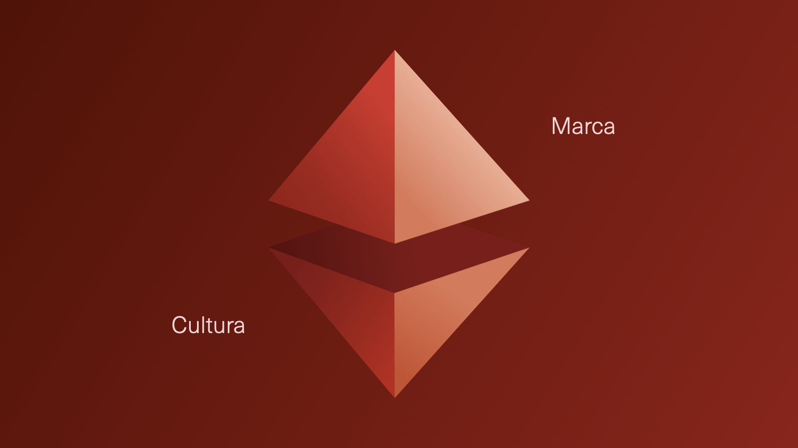
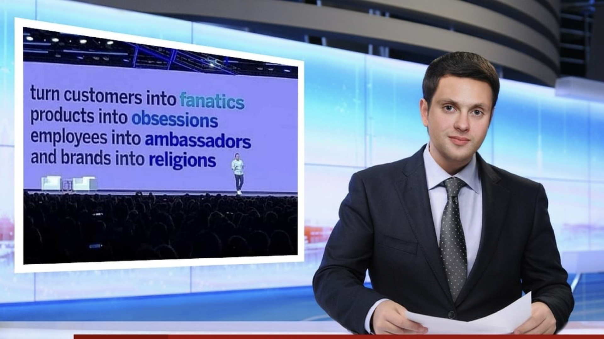
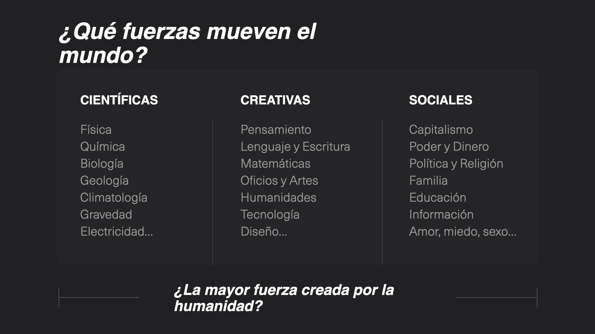
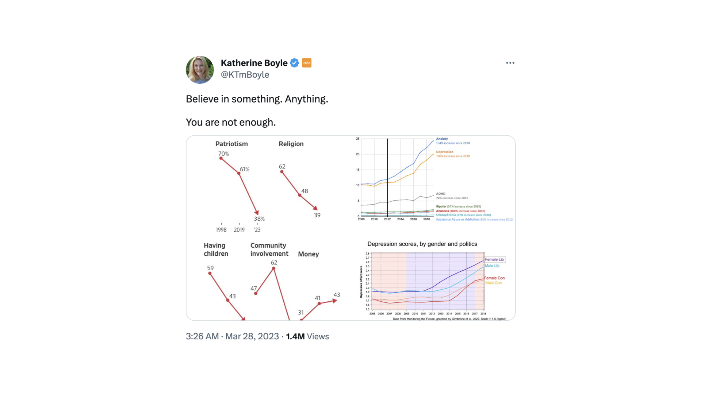
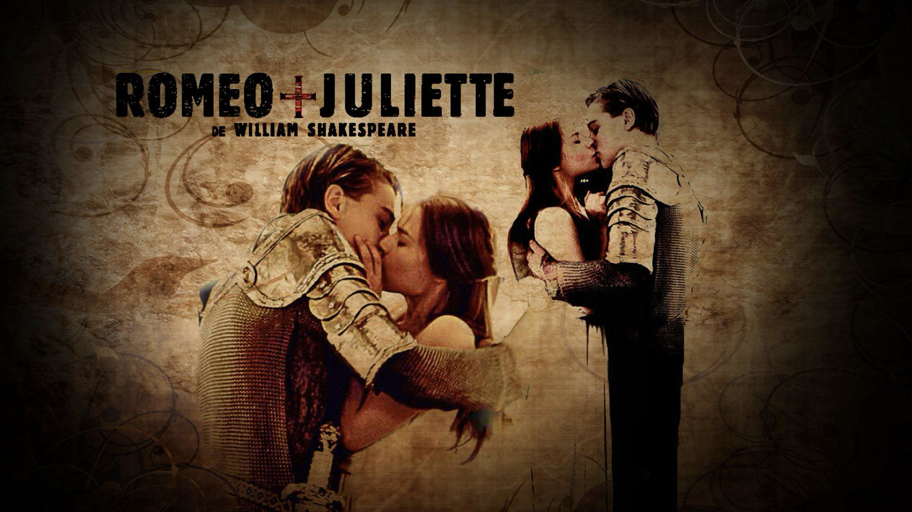
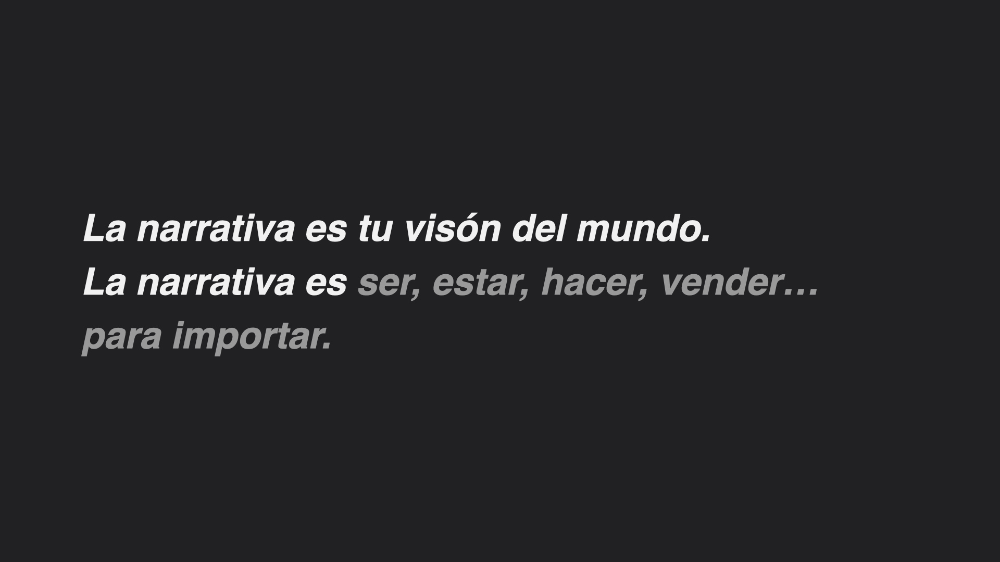
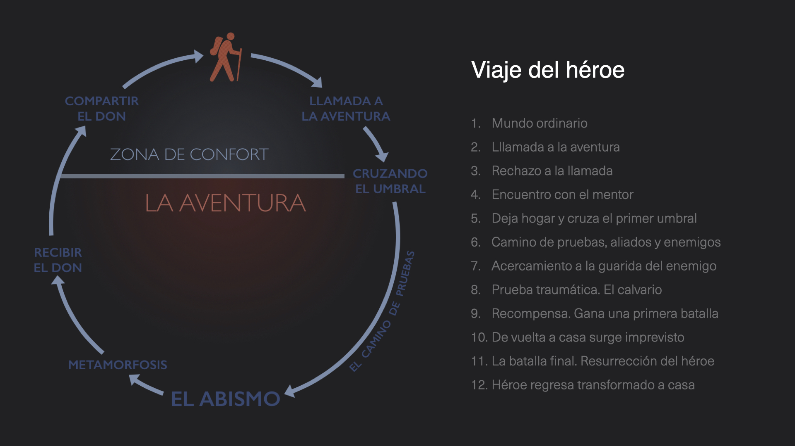
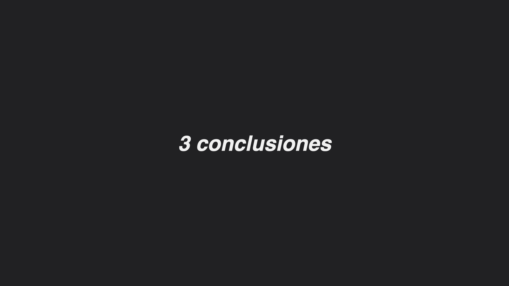
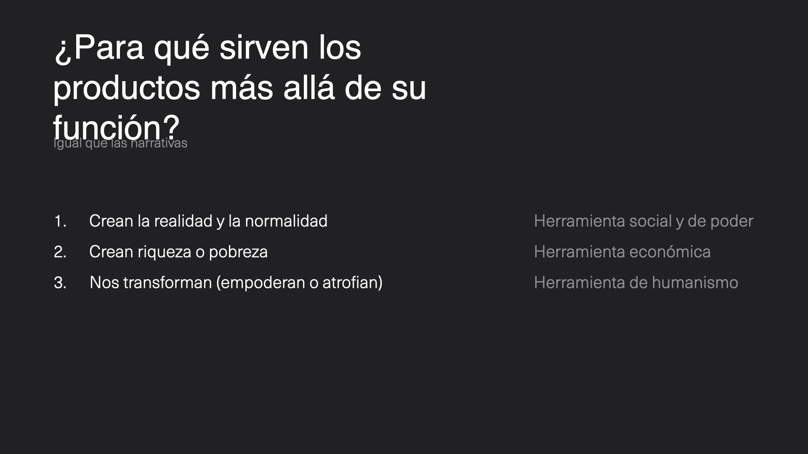
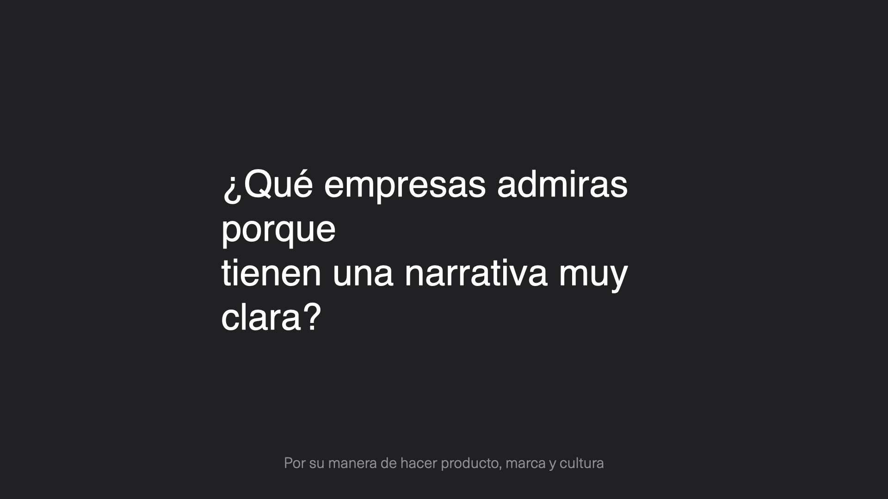
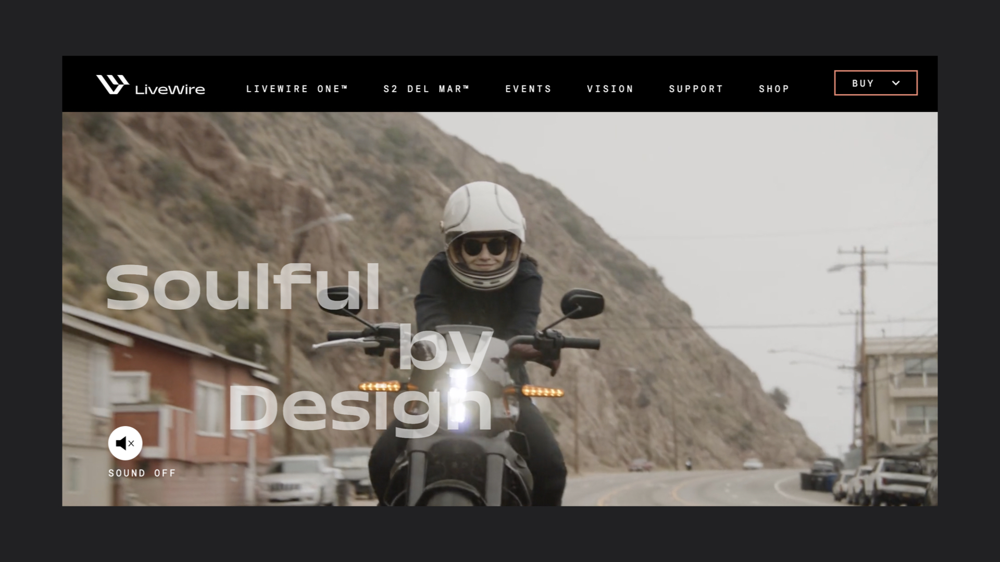
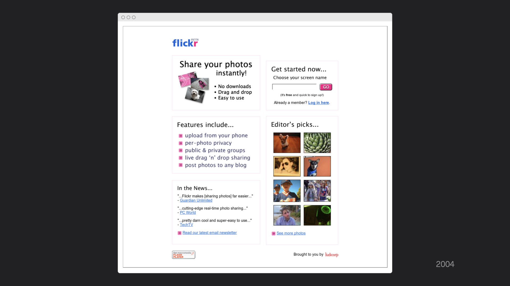
Parte II
La estrategia invisible: cosmovisión, framework, concepto y la historia de la publicidad como espejo del siglo
Si la Parte I fue sobre entender al ser humano, la Parte II es sobre articular esa comprensión en un sistema operativo para la empresa. La narrativa no es contar. Es gestión transversal. Es tu estrategia. Es tu ética y estética. Es tu esencia.
Cosmovisión → Narrativa → Marca → Producto/Negocio → Cultura
La cosmovisión es el centro. Todo irradia desde ahí. La narrativa articula esa cosmovisión. La marca la hace perceptible. El producto la materializa. La cultura la sostiene en el tiempo.
La narrativa no puede encajonarse en el equipo de marca como tradicionalmente ha sucedido. La narrativa tiene que ser agua que riegue a toda la organización. El agua que da vida a la empresa. Generalmente nace del CEO y tiene que irrigar a toda la organización, ayudándose de personas de otras áreas que dirigen y articulan en todas las direcciones.
Las empresas son agentes sociales para crear economía y sociedad. La cosmovisión —un concepto deliberadamente más ambicioso que la «visión» corporativa convencional— incluye propósito, misión, valores y principios, objetivos y ejes estratégicos, clientes y mercado, industria y sociedad, conciencia y legado, manifiesto. Debe incluir objetivos de negocio para ser sincera y honesta. Su formato ideal es un documento A4 enriquecido continuamente.
El propósito es por qué haces lo que haces más allá de lo económico. Una frase de 4-6 palabras que empieza con verbo. Auténtico, realista, creíble e ilusionante. Exagerar equivale a postureo ineficiente. No todas las empresas lo tienen y no pasa nada. Ejemplo de Tramontana: «Elevar el nivel de quienes crean empresas y soluciones.»
La misión es el producto ideal que vas a construir para alcanzar tu propósito. La analogía es perfecta: el propósito de la Iglesia en Latinoamérica en el siglo XVI era evangelizar; la misión era construir iglesias.
Los valores son conceptos abstractos: honestidad, transparencia, innovación. Quedan muy bien en un póster, pero son poco útiles en el día a día. Los principios son mensajes y comportamientos que aterrizan los valores. Deben ser MUY accionables.
→ «No explotar debilidades humanas en producto»
→ «Precios sin letra pequeña»
→ «Construir en abierto»
→ «Salarios en ofertas de empleo»
Son los criterios y «must-have» para las tomas de decisiones más importantes e incluso las más pequeñas. Ejemplo de INESDI con sus 5 E: Empleabilidad, Especialización, Esperanza, Elevación, Estilazo.
Responde a «¿En qué crees?». Incluye propósito, misión, valores, ejes y referencia al legado. Frases directas, sinceras e inspiradoras.
Las FAQ ontológicas de toda la organización. Incluyen frases y definiciones, go-to-market, features, benefits, elevator pitch, paid media, comunicaciones internas, héroes y villanos, touchpoints.
For (target) Who (need), Product is a (category) That (key benefit). Unlike (competitor), Product (primary differentiation).
«Las empresas que ayuden a los clientes a cambiar su forma de pensar serán más eficientes en resolver problemas y vender soluciones.» Un buen concepto se destila respondiendo a: ¿Cuál es tu esencia? ¿Qué eres? ¿En qué se resume tu propuesta de valor y diferenciación?
El concepto radica en identificar un shift: la hipótesis de cambio para que el cliente se decida a usar tu producto. Se construye con herramientas lingüísticas: sustantivos, metáforas, analogías, eslóganes, neologismos, estereotipos. «El Spotify de los libros», «el Twitch de la educación», «el Barça es el Disney del fútbol», «Més que un club», «Think Different».
El caso de Ignaz Semmelweis es revelador: descubrió la existencia de gérmenes y bacterias a finales del siglo XIX, pero la comunidad médica rechazó su teoría porque no pudo articularla en un marco mental comprensible. Necesitaban una explicación más humana. Sin el marco adecuado, ni siquiera la verdad consigue avanzar.
Antes de construir nada, hay una fase de investigación y entrevistas con equipos, clientes, inversores. Ocho preguntas miran hacia dentro (aura interna) y ocho miran hacia fuera (aura externa). Cada pregunta tiene un propósito oculto: analizar el perfil psicológico del líder, detectar coherencia entre equipos, identificar si el propósito es genuino o meramente económico.
En 2021, Zuckerberg presentó el Metaverso al mundo. Desde los primeros minutos del vídeo enmarcó tanto a él como a Meta en los pioneros del futuro: «Esto es el futuro. Nosotros vamos a crear el futuro.» Para ganar autoritas —y por tanto credibilidad—, Meta se asoció con figuras relevantes de la historia. Los verbos y acciones asociados al metaverso eran deliberados: explorar, imaginar, experiencia, sentir, flotar.
El resultado a día de hoy demuestra que un marco mental sin sustancia real colapsa. Meta no sabía si el metaverso era B2C o B2B. La distinción entre simulación (que falsifica una experiencia) e inmersión (que te traslada a otro universo, evocas, sientes) es clave. Baudrillard lo anticipó: el simulacro es una copia de la realidad que sentimos como más real que el original, un artificio que damos por bueno y que, al aceptarse colectivamente, se convierte en real.
El consumismo y la manera de vender bienes ha tenido tres grandes etapas, según la evolución cultural y la saturación del mercado.
| Era | Desde | Input | Output |
|---|---|---|---|
| Era del producto | 2000 a.C. | Producto con beneficio | Satisfacción funcional |
| Era de la identidad | 1950s | + Identidad social | Estatus y autorrealización |
| Era del propósito | 2000s | + Propósito | Conciencia y compromiso |
La era de la identidad arranca en los años 50 con la edad dorada de los «Mad Men» —apodo de los publicistas de Madison Avenue—. Bill Bernbach revolucionó el método de trabajo: fue la primera persona que juntó al copywriter y al dibujante en un mismo equipo (antes trabajaban por separado). Lo hizo tras trabajar con el mítico Paul Rand, diseñador del logo de IBM. Paul Rand también trabajó con Steve Jobs, a través de Susan Kare, para la creación del logo de NeXT.
Bernbach creía firmemente que la mejor publicidad es el boca a boca. Su campaña «Think Small» de 1959 para Volkswagen está considerada la campaña más importante del siglo XX y seguramente la mejor de la historia. «Think Small» cambió el mundo de la publicidad para siempre.
Entre los años 70 y 90, las grandes marcas descubrieron que la rivalidad narrativa vendía más que el producto mismo. Las Cola Wars entre Coca-Cola y Pepsi, las Burger Wars entre McDonald's y Burger King, las PC Wars entre Apple y IBM —y después Apple y Microsoft— definieron décadas enteras de cultura popular. Siempre hay buenos y villanos, necesitas al malo. Cuando tienes a quién compararte o enfrentarte, la narrativa cobra fuerza.
Nike es quizás el caso más completo de evolución narrativa en la historia del branding. Dan Wieden creó «Just Do It» en 1988, inspirándose en las últimas palabras de un condenado a muerte. La frase trascendió la publicidad para convertirse en filosofía de vida. Pero Nike no se detuvo ahí. La campaña de Colin Kaepernick en 2018 —«Believe in something. Even if it means sacrificing everything»— inauguró definitivamente la era del propósito en el branding mainstream. Dream Crazy y Dream Crazier completaron la trilogía.
En 1984, Apple presentó el Macintosh con un anuncio dirigido por Ridley Scott que se emitió una sola vez durante la Super Bowl. En 1997, al borde de la quiebra, Steve Jobs lanzó «Think Different»: un concepto que se hizo para vender pero terminó afectando al ser y hacer de toda la compañía y de sus clientes. En 2007 presentó el iPhone al mundo: Apple «reinventa» el teléfono. La importancia de los verbos.
Llegados a este punto, conviene detenerse en una lección fundamental sobre estrategia impartida por Javier Recuenco: la diferencia entre un problema complicado y un problema complejo.
Conjunto claro de medios para alcanzar un estado objetivo definido. Hay un camino, aunque sea difícil.
No hay definición clara del problema, estado objetivo difuso, medios no claros. Todo es susceptible de volverse un problema complejo.
Un estado atractor proporciona un sentido de dirección para la evolución futura de una industria. «IP everywhere» permitió el despunte de Cisco, Napster/iTunes/Spotify, IoT. Los cinco mega-atractores actuales son: espacios hiperpersonales, megatrends tecnológicos (Big Data, AI, VR, Blockchain, IoT, SaaS), Agenda 2030, Customer Centricity + Personotecnia, y Crunching Business Models (ciclos de disrupción ultracortos).
Los tres pilares de la mala estrategia: fallo en la definición del desafío, confundir objetivos con estrategia, y malos objetivos estratégicos. La buena estrategia tiene tres elementos: diagnosis, marcos/guías/políticas, y toma de acciones coherentes.
Giorgio Nardone desarrolló cuatro técnicas de problem solving estratégico que invierten la lógica convencional:
Existen más de 170 sesgos cognitivos documentados. El efecto Dunning-Kruger es especialmente relevante: los menos competentes son los más confiados. Las cuatro trampas principales: demasiada información, inventar sentido, conclusiones prematuras y sesgo de confirmación.
Galería de Keynotes — Narrar
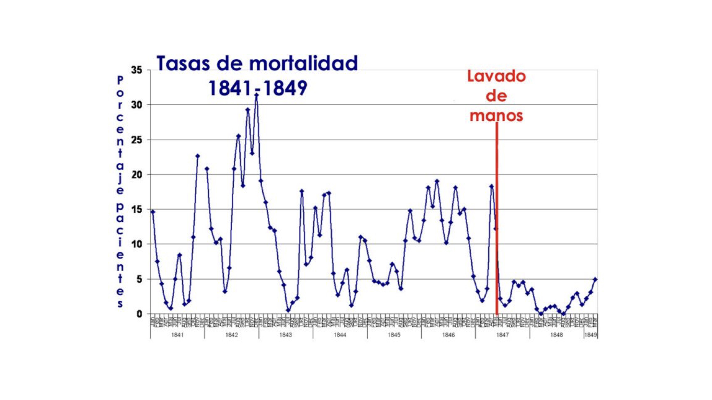
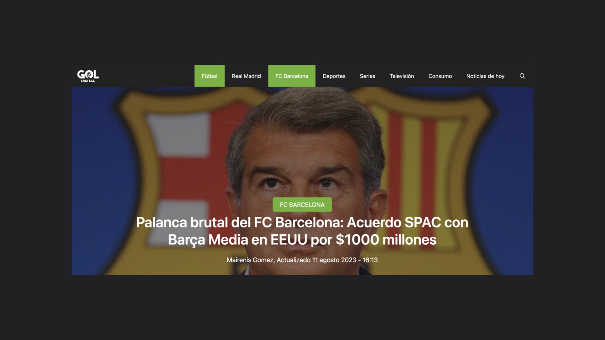
Parte III
El aura percibida de valor: personalidad, emoción, causa, identidad y el camino de la comunidad
En los años 2020, hacer marca se resume en tres verbos: articular una personalidad, dominar una emoción y defender una causa. Las marcas son la nueva mitología moderna, decía Georges Lewi. Quieren tener creyentes. Harley-Davidson, Apple, Patagonia son marcas que definen un estilo de vida; las personas las adoptan de manera casi acrítica. La pregunta incómoda es: ¿branding es generar fans o pensamiento crítico? La respuesta de las empresas que importan es ambas cosas.
Muchas marcas están ocupando un vacío existencial que dejan las religiones e ideologías. Hay una burbuja alrededor del propósito, pero cada vez es más evidente que el branding sólido requiere los tres elementos. Esta etapa se inaugura con Dove (Real Beauty, 2004) y se consolida con Nike (Kaepernick, 2018).
El HXC es la expectativa suprema o beneficio más aspiracional del cliente. Es la brújula del producto y la marca:
Logo, tipografía, colores, fotografía, vídeos. La identidad visual no es decoración: es la materialización de tu narrativa. «El fondo dirige la forma.» La tarjeta de Monzo —Hot Coral— se convirtió en objeto de deseo en un mundo minimalista, aspiracional, rebelde y joven. Lo visual es la primera interfaz con tu marca.
Dos conceptos que conviene no confundir:
Nombrar una marca es uno de los actos creativos más importantes y más difíciles. Hay 8 criterios a evaluar:
Y 6 categorías: descriptores (Google Maps), adjetivistas (FastMail), asociativos (Telegram, Nike), neologismos (Instagram), evocadores (Twitter, Privalia) y abstractos (Wallapop).
Una marca necesita ser memorable —que merezca la pena recordarse— y memerable —que merezca ser meme, ser compartida—. En la era digital, la viralidad no es un accidente: es consecuencia de una marca que activa la necesidad de compartir.
| Etapa | Eres | Valor | Target |
|---|---|---|---|
| Heroísmo | Diferente | Solución diferencial | Clientes |
| Lovebrand | Top of Mind | Solución + Marca | Clientes + Comunidad |
| Mythbrand | Inmortal | Solución + Marca + Cultura | Clientes + Comunidad + Sociedad |
La evolución de customer-centric (Lovebrand: experiencia + marca) a relationship-centric (Mythbrand: experiencia + marca + cultura) es el salto más difícil y el más importante. Las marcas que importan no se conforman con ser amadas: aspiran a ser inmortales.
Gabriela Lendo enseñó que la cultura por diseño fortalece organizaciones; la cultura por defecto las debilita. Su trabajo identificó los 5 gaps más comunes:
El framework para reconectar: identifica el gap, encuentra el origen, re-encauza, vuelve a diseñar y comunica al equipo la mejora.
Tres aprendizajes: 1. Involucra al equipo en la construcción de marca —un taller no es suficiente—. 2. Own your purpose. Be accountable. Eres el ejemplo. 3. Documenta, documenta, documenta —las keynotes no son suficientes—.
Tres aprendizajes: 1. Gánate la confianza del equipo ANTES de redefinir valores y propósito. 2. Contrata personas de Cultura con sensibilidad de marca. 3. A veces no es el momento. No depende de ti.
La comunidad es el MOAT de Buffett aplicado a las marcas: la ventaja competitiva más difícil de replicar. Sin personalidad, generosidad, autenticidad, creatividad, diversidad, autoridad, humildad, libertad, verdad y transparencia, no puedes construir comunidad.
Un concepto transversal a todo el programa. Para crear y liderar comunidad necesitas tres tipos de autoridad:
MVP (Minimum Viable Product) → Validación
MLP (Minimum Lovable Product) → Product Market Fit
MMP (Minimum Marketable Product) → Crecimiento
MVirP (Minimum Virtuous Product) → Comunidad
Los datos lo confirman (Marty Neumeier): el 50% de los clientes más leales pagarían un 25% de premium antes de cambiar. Los clientes leales gastan un 33% más. Un 5% de aumento en retención genera un 30% más en beneficios.
Para construir comunidad tienes que amar profunda y sinceramente lo que haces. Construir comunidad es como un sacerdocio. Tú no eres el protagonista. Comunidad es «Nosotros» frente a «Yo». Comunidad es cuidar.
Misión > Modelo · Plataforma > Producto · Comunidad > Clientes · Ética > Estrategia · Prosperidad > Progreso · Abierto > Cerrado · Trascendencia > Relevancia
Parte IV
La trinidad narrativa: Esperanza, Épica y Elevación — las tres emociones que hacen que una empresa trascienda
El diagnóstico social es claro. Según el Trust Barometer 2023 de Edelman: el 60% de las personas creen que no vivirán mejor en 5 años (+10 puntos respecto a 2022). El 63% comprarían o recomendarían una marca por sus valores (era el 50% en 2017). El 69% consideran la conciencia social un factor importante para trabajar en una empresa. Los gobiernos generan menos confianza que las empresas. La crisis de religiones e ideologías genera una necesidad profunda de creer en algo.
En este contexto, la esperanza no es ingenuidad: es estrategia.
Culpabilizar vs. Motivar. Demasiadas marcas, movimientos y políticas han elegido el camino de la culpa —«tú eres parte del problema»— en lugar del camino de la motivación —«tú puedes ser parte de la solución»—. El resultado ha sido desconexión, cinismo y parálisis.
Para trabajar una emoción, siempre hacer un diccionario. Para la esperanza: sustantivos como felicidad, cambio, ilusión, anhelo, expectativa; verbos como creer, cambiar, mejorar, transformar; adjetivos como nuevo, ilusionante, feliz, mejor. Esta técnica obliga a precisar el territorio emocional y evita la vaguedad.
Épica = Exageración ética y estética.
Grandilocuencia, gestos públicos, confrontación, negatividad. El discurso de JFK en Rice University sobre ir a la Luna. La retórica de Churchill. El «I Have a Dream» de Martin Luther King.
Lo cotidiano y anónimo, amor, familia, amistad, ilusión y unidad. La belleza de lo invisible. Lo que Miyazaki llama «Ma»: la nada que lo es todo.
Miyazaki y el concepto japonés «Ma»: la nada que lo es todo. La belleza de lo pequeño, lo cotidiano, universal y atemporal. «Las películas de Disney te llegan al corazón, pero las de Miyazaki te llegan al alma», dijo John Lasseter. La mayor revolución ha sido la de los cuidados. Los verbos son más importantes que los adjetivos en la épica y la esperanza.
Si la esperanza mira al futuro y la épica mira al esfuerzo, la elevación mira al alma. Su concepto central es la deseabilidad honesta: «Los negocios son relaciones de confianza. Para crearlas hay que crear deseabilidad de manera honesta.»
| Deshonesta | Honesta |
|---|---|
| Exagerar el problema | Explicar el problema |
| Resolver explotándote | Resolver inspirándote |
| Emociones negativas | Emociones positivas |
| Overpromise | Promesa superada |
| FOMO | JOMO (Joy Of Missing Out) |
| Comunicar para gastar | Comunicar para inspirar |
M.A.Y.A. (Raymond Loewy): Most Advanced Yet Acceptable. La innovación debe ser suficiente para sorprender pero no tanta como para alienar. La regla del 3% (Virgil Abloh): cambiar solo un 3% para innovar. A veces la revolución está en el matiz, no en la ruptura.
Si la marca es el aura percibida de valor...
Si la cultura es la coherencia constante sistematizada...
La elevación es el amor que trasciende.
El amor por los detalles necesarios e innecesarios. No se trabaja desde la autenticidad, sino desde la fidelidad —casi radical— a tu narrativa. Se trabaja como un sacerdocio. No desde el corazón, sino desde el alma. Es más una cuestión ética que estética.
Esperanza, Épica y Elevación comparten los mismos 10 elementos fundamentales —autoridad, oportunidad de cambio, marco de identidad, conexión histórica, fe y voluntad, valores, gestos de acercamiento, mitología, deseo de pertenencia, final transformador— pero cada una los trabaja desde una perspectiva distinta. La esperanza mira al futuro con optimismo. La épica mira al esfuerzo con admiración. La elevación mira al alma con amor.
Juntas forman la trinidad narrativa: el motor emocional de cualquier empresa que aspire a importar.
Parte V
La coherencia constante: cultura como producto, liderazgo como cuidado y los casos que lo demuestran
Siempre se habla de posicionar, marketear, brandear... pero nunca se habla de culturar. Culturar no existe como verbo. Culturar es hacer cultura, sembrar la cultura, regarla, cuidarla, evolucionarla siempre que sea necesario y escalarla. Tu cultura es tu otro gran producto a construir.
«La coherencia constante y sistematizada.»
«Lo que haces cuando nadie te ve.»
«Lo que sientes el domingo por la tarde pensando en el lunes.»
«Toda organización y equipo es un estado de ánimo.»
«Culture eats strategy for breakfast.» — Peter Drucker
Las emociones son métricas de cultura (Paul Ekman, Robert Plutchik). Medir trimestralmente: satisfacción, motivación, empoderamiento frente a insatisfacción, desmotivación, miedo, estrés. Lo que no se mide no se gestiona, y las emociones del equipo son el indicador más honesto de salud organizativa.
Solo hay dos tipos de líderes: los que te inspiran y los que te esclavizan. No hay término medio.
Liderar también es pedir ayuda, saber colaborar y aprender. El liderazgo no es un título: es un comportamiento diario.
Las reglas son conductas explícitas, escritas, vigiladas e impuestas, con consecuencias. Las normas son reglas tácitas, consensos implícitos e informales. Las actitudes son estados mentales que predisponen a pensar o hacer algo —funcionan como objetivos—. Los comportamientos son acciones observables y medibles —funcionan como métricas—.
«Narrativa, marca y cultura también es cuándo pagas a tus clientes o proveedores.» La cultura se manifiesta en los detalles más prosaicos.
En 2009, Netflix publicó «Netflix Culture: Freedom & Responsibility», que acumuló más de 17 millones de visualizaciones. Sheryl Sandberg lo llamó «el documento más importante en la historia de Silicon Valley».
Sus principios clave: Dream Team, no familia. «Not brilliant jerks.» Nueve valores: Judgment, Communication, Impact, Curiosity, Innovation, Courage, Passion, Honesty, Selflessness. «The Rare Responsible Person»: self-motivating, self-aware, self-disciplined, self-improving.
Política de gastos: «Act in Netflix's best interest.» Vacaciones: «Take vacation» —sin reglas, sin límites—. «Values are what we Value»: el recordatorio de que Enron tenía valores preciosos en el lobby pero acabó en el mayor fraude corporativo de la historia.
Así como existe el MVP para el producto, existe el MVC para la cultura. Once pasos para empezar:
El handbook de SPACE10 es un ejemplo de buenas prácticas culturales llevadas al extremo: viernes libre como «Day of Inspiration», reuniones de 25/40/50 minutos (nunca 30/45/60), baja menstrual separada de la baja por enfermedad, 10 días de duelo pagados, hasta 38 semanas de maternidad/paternidad a sueldo completo, almuerzo vegano, código de conducta con cero tolerancia a discriminación.
Gabriela Lendo y Elena Sánchez Nogales presentaron el trabajo con BNE para darle profundidad y discurso al merchandising y a la propia institución. La BNE, fundada por Felipe V en 1711, es el depósito legal de toda la producción bibliográfica española. Su nueva narrativa: «Conocer nuestra historia es imaginar un país. Más Biblioteca es esperanza de futuro.» El principio operativo: «Tu producto también es el mensaje» — crear productos pero, sobre todo, dotar de discurso.
«Hombres de España, ni el pasado ha muerto / ni está el mañana —ni el ayer— escrito.» — Antonio Machado
Juan Carlos Tous (CEO) y Pilar Toro (CMO) mostraron cómo crear, gestionar y crecer una empresa desde una cosmovisión clara. Filmin representa el buen Made in Catalonia, Made in Spain, Made in Europe. Si el «Made in USA» se fundamenta en la abundancia —Henry Ford, cadenas de montaje, economías de escala—, Filmin y el «Made in Europe» representan plenitud: empresas que crean prosperidad plena más allá de lo económico, sociedades con estados de bienestar que permiten innovar y cuidarnos.
Inés y Diego Arroyo, cofundadores de la firma de moda que está convirtiéndose en una de las favoritas entre mujeres de 25-40 años, articulan un diseño y filosofía anclados en un diccionario de adjetivos. Cada colección parte de palabras, no de tendencias. La referencia a Scaling People (COO de Stripe) reafirma la importancia de documentos fundacionales rigurosos.
Fer Suárez, responsable de People para Tecnología, presentó cómo Inditex revolucionó la industria democratizando el vestir bien. El reto actual: demostrar que vestir bien puede ser asequible, ético y responsable. La dirección creativa digital tiene nivel de marca de lujo. La pregunta sobre el paradigma «everything to everyone» —Zara Home, Zara Hair, ¿Inditex como el Amazon del Lifestyle?— define el futuro de la compañía.
Parte VI
El cierre del círculo: ser, estar y hacer para impactar e importar a alguien
La primera clase se tituló «Ser y estar». La segunda se tituló «Hacer». El cierre del programa se titula «Importar». El círculo se completa: la narrativa es ser, estar y hacer para impactar e importar.
El programa ha sido una formación para crear mejores organizaciones y sociedades. Ha sido un programa para crear productos y servicios que importen. Liderazgos que importen. Empresas que importen.
El gran aprendizaje que atraviesa todas las sesiones: ser es más importante e impactante que parecer. Cuando eres tú, importas a los demás. Cuando quieres parecer lo que no eres, eres irrelevante. Es más fácil ser bueno que malo.
A lo largo de las 24 sesiones, las tres autoritas han aparecido una y otra vez como el esqueleto de todo lo demás:
Sin las tres, no hay narrativa creíble. Sin las tres, no hay marca respetada. Sin las tres, no hay cultura sostenible. Sin las tres, no importas.
Los tres conceptos comparten diez elementos comunes y deben trabajarse de forma integrada. No son opciones: son capas. Una empresa que trabaje la esperanza pero no la épica se queda en el optimismo vacío. Una que trabaje la épica pero no la elevación se queda en el espectáculo. Solo la integración de las tres produce algo que trasciende.
Narrativa: Tu visión del mundo articulada en todo lo que eres y haces.
Marca: El aura percibida de valor.
Cultura: La coherencia constante sistematizada.
Elevación: El amor que trasciende.
Branding: Articular personalidad + dominar emoción + defender causa.
«Deja fluir la escritura y luego sintetiza e intenta convertir la prosa en ritmo casi musical. Fluye, sintetiza y dale cadencia.» La narrativa es también oficio de escritura. Las palabras importan. Cada una.
Apéndice
Los libros, las citas y el diccionario del programa
Yuval Noah Harari
Byung-Chul Han
Bard Annweiler
Joseph E. Stiglitz
Claire Hughes Johnson
Douglas Atkin
Esther Duflo, Abhijit Banerjee
Terry Szuplat
Turner Dukworth
Byung-Chul Han
Richard Rumelt
Tony Fadell
Ana Andjelic
Douglas Atkin
Robert J. Shiller
Marty Neumeier
Marty Neumeier
Marty Neumeier
Greg Hoffman
Alessandro Baricco
Ben Horowitz
Emily Heyward
Bailey Richardson et al.
Toni Segarra, Leopoldo Abadía
David Spinks
Patty McCord
George Lakoff
David Ogilvy
Bob Levenson
James Clear
| Término | Definición |
|---|---|
| Narrativa | Tu visión del mundo articulada en todo lo que eres y haces. No es contar: es gestión transversal. |
| Marca | El aura percibida de valor. Personalidad + Emoción + Causa. |
| Cultura | La coherencia constante y sistematizada. Lo que haces cuando nadie te ve. |
| Elevación | El amor que trasciende. Estrategia con ética, estética, esperanza y épica. |
| Cosmovisión | Tu posición en el mundo y posicionamiento en el mercado. Resume lo que eres. |
| Propósito | Tu porqué. Por qué haces lo que haces más allá de lo económico. 4-6 palabras, empieza con verbo. |
| Misión | Tu qué. El producto que construirás para cumplir tu propósito. |
| Concepto | El marco mental que resume tu propuesta de valor con un shift. |
| HXC | High-Expectation Customer. La expectativa máxima y aspiracional de quien te usa. |
| Ejes | Las velas del barco. Líneas de actuación y pilares estratégicos. |
| Autoritas | Las tres autoridades: moral, intelectual y ejecutiva/maker. |
| Storyframing | Crear el marco mental desde el que se interpreta la realidad. Más poderoso que el storytelling. |
| MVC | Minimum Viable Culture. Los 11 pasos para empezar a construir cultura. |
| MVirP | Minimum Virtuous Product. El producto que genera comunidad. |
| MAYA | Most Advanced Yet Acceptable. El equilibrio entre innovación y aceptación (Raymond Loewy). |
| Culture Gap | Incoherencia entre lo que una empresa dice que es y lo que realmente hace. |
Instituto Tramontana
1ª Edición · 2023-2024